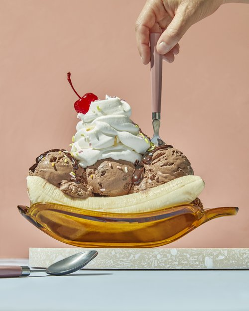

Desserts

Description
- Desserts can be defined as a usually sweeter course that concludes a meal
- This definition includes a range of courses ranging from fruits or dried nuts to multi-ingredient cakes and pies. Many cultures have different variations of dessert.
- The desire to improve your mood by ingesting sugar can also be a factor. Sweet snacks increase our production of the so-called hormone of happiness. Your habits also play an important role.
- sweet food eaten at the end of a meal: a dessert fork/spoon. For dessert there's apple pie or fruit. If you make the main course, I'll make a dessert
- The word “dessert” actually originated from the French word desservir, meaning “to clear the table.” This refers to the fact that desserts are served after the other dishes are cleared off the table.
Ingredients
- 1 1/2 cups (300g) sugar.
- 4 1/2 teaspoons cornstarch.
- 6 egg whites, at room temperature.
- Pinch salt.
- 1/2 teaspoon cream of tartar.
- 1 teaspoons vanilla.
- 1/4 cup (21g) Dutch processed cocoa powder.
- 4 tablespoons sliced almonds.
Steps
- Preheat the oven.
- Mix the sugar and cornstarch.
- Beat the egg whites.
- Mix in the vanilla and cocoa powder.
- Bake the meringue.
- Top with chocolate.
- Make the whipped cream.
- Fill and finish the pavlova.